사용법
최종 수정일: 2026년 11월 2일
책 넣기
My의 '책 파일 추가'에서 '파일 추가하기'를 누릅니다. EPUB·PDF·TXT 형식은 자동으로 판별합니다.
여러 권은 '지정 폴더에서 책 추가하기'에서 고릅니다. 등록한 파일은 앱 안에 복사됩니다.
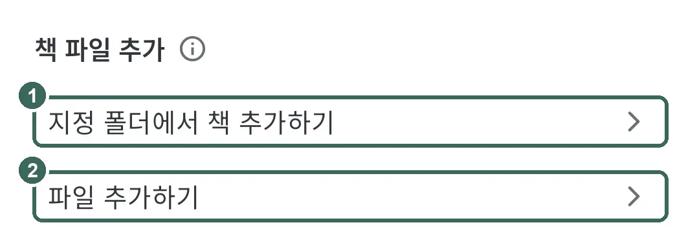
같은 작품에 파일을 더 붙이려면 작품 정보의 '파일' 줄에서 '+ 파일 추가'를 누릅니다.
표지를 누르고 '파일 표지 중에서 고르기'나 '갤러리에서 고르기'를 누릅니다.
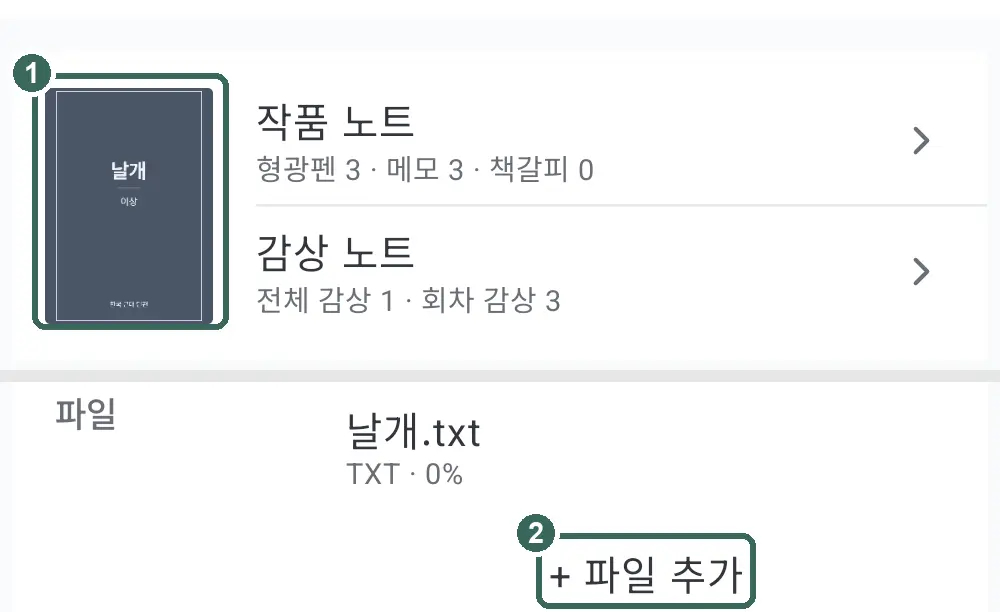
읽기·보기 설정
책을 열고 화면 가운데를 누르면 메뉴가 열립니다. 다시 누르면 닫힙니다. ‘목차’를 누르면 왼쪽에서 목록이 열리고 목록 바깥을 누르면 닫힙니다.
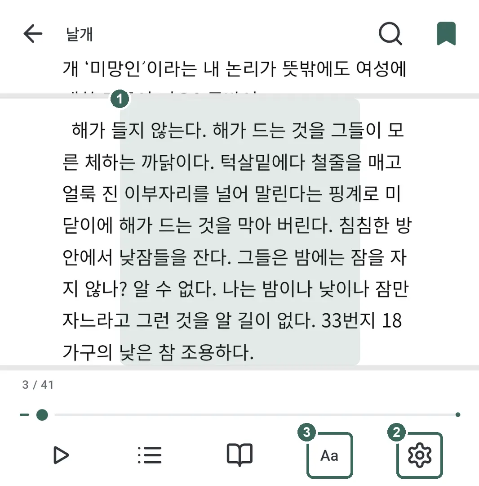
'뷰어 설정'의 '페이지 넘김 터치 영역'에서 방향을 고릅니다. 기본인 '좌우'는 왼쪽이 이전 쪽, 오른쪽이 다음 쪽이며 '상하'는 위가 이전 쪽, 아래가 다음 쪽입니다. '밝기 조절 제스처'를 켜면 EPUB·TXT·원본 PDF에서 화면 왼쪽 가장자리를 위로 쓸어 밝게, 아래로 쓸어 어둡게 조절합니다. '스크롤 보기'에서는 사용할 수 없습니다.
EPUB·TXT는 '보기 설정'에서 글꼴·글자 크기·간격·배경을 조절합니다. 원본 PDF는 글자 크기를 바꾸지 않습니다. '보기 설정'의 '화면'에서 '전체 화면'을 활성화하면 독서 중 화면 상단의 상태 표시줄이 숨겨집니다. '보기 설정'의 +/− 버튼을 길게 누르면 값이 계속 바뀌며, 오래 누를수록 빨라집니다.
'스크롤 보기'에서는 화면을 밀어 읽습니다. 가장자리 터치로는 쪽을 넘기지 않습니다. 읽기 화면 아래 바의 '자동 스크롤'을 누르면 본문이 자동으로 내려갑니다. 조작 바의 −/+로 속도를 조절합니다. 화면을 누르면 멈추고 조작 바가 열리며, 다시 누르면 닫히고 이어집니다. 손으로 스크롤하거나 형광펜을 긋기 시작해도 멈춥니다.
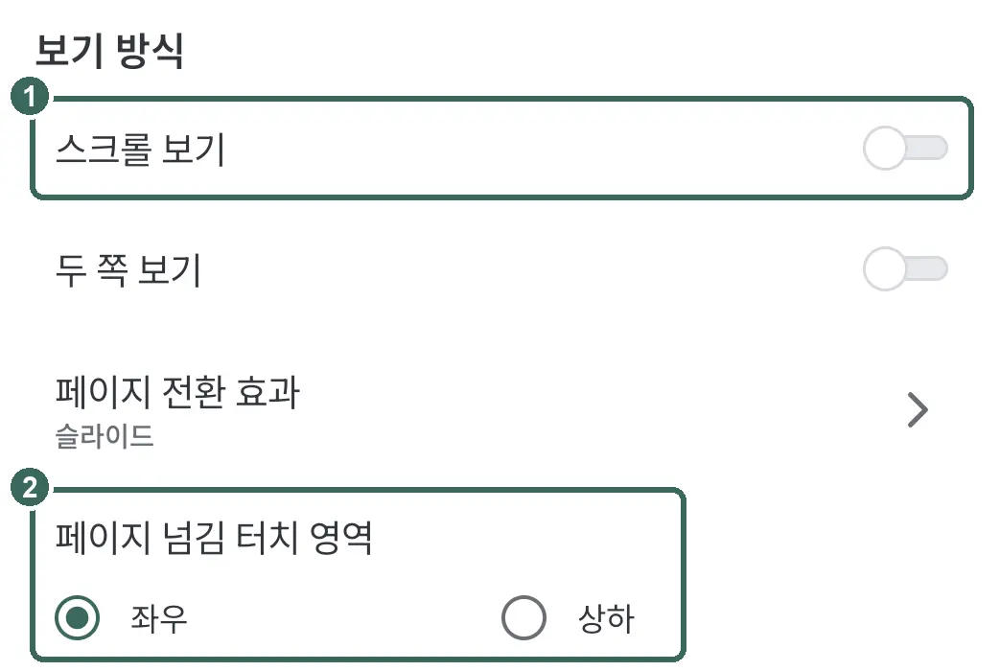
‘뷰어 설정’의 ‘하단 바 구성’에서 ‘하단 좌/우 정보 표시’를 엽니다. ‘숨김’의 ‘챕터 페이지 번호’를 눌러 ‘좌측으로 이동’이나 ‘우측으로 이동’을 고르면 챕터마다 1쪽부터 표시합니다. 항목을 끌어 옮길 수도 있습니다. 스크롤 보기·세로쓰기·오른쪽부터 읽기에서는 표시하지 않습니다.
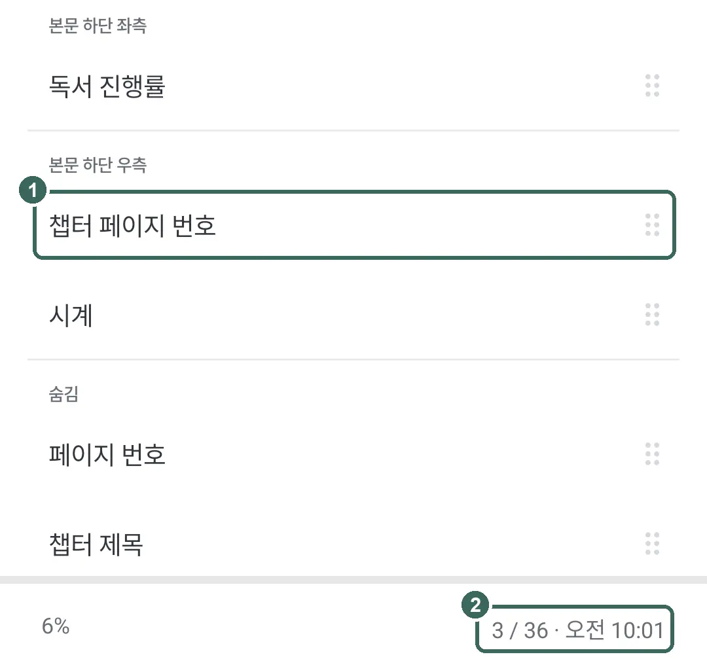
앱 언어는 My의 ‘언어’에서 바꿉니다. Android 13 이상에서는 시스템의 앱별 언어 설정 화면이 열리고 Android 12 이하에서는 앱 안의 선택창이 열립니다.
형광펜·메모·책갈피
EPUB·TXT에서 문장을 길게 누르고 범위를 조절한 뒤 색 버튼을 누릅니다. 남긴 형광펜을 누르면 색을 바꿀 수 있습니다.
문장을 고른 뒤 '메모'를 누르고 내용을 적어 '저장'합니다.
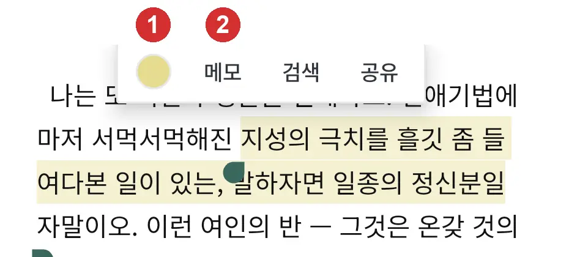
메뉴의 책갈피 버튼을 누르면 위치가 남고 다시 누르면 해제됩니다. 책갈피 목록은 ‘목차’를 눌러 왼쪽에서 열고 목록 바깥을 눌러 닫습니다. 남긴 기록은 ‘독서노트’에서도 확인합니다.
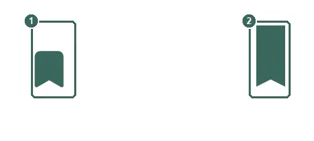
원본 PDF는 'EPUB으로 변환해서 읽기'로 변환한 뒤 형광펜을 남깁니다. 글자 없는 이미지 스캔본은 변환되지 않습니다.
TTS 듣기
읽기 화면 아래 바의 '듣기'를 누르면 지금 보는 쪽부터 소리로 읽어 줍니다. 기기에 한국어 음성이 없으면 설치 안내가 먼저 뜹니다.
재생 바에서 문장 앞뒤 이동, 속도, '듣기 타이머', '터치 잠금'을 다룹니다. 본문 문장을 누르면 그 문장부터 읽고, 톱니 모양 버튼은 '듣기 설정'을 엽니다.
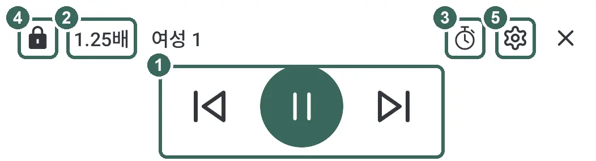
'듣기 설정'에서 지문·대사·속마음의 목소리를 따로 고르고 '미리듣기'로 들어 봅니다. 말줄임표·장면 전환·줄표 뒤에 쉬는 길이도 각각 정합니다.
'읽기 규칙'에서는 「 」 〈 〉 《 》 < > 안을 대사로 읽기, 대괄호 [ ] 안 내용 읽기, 메신저 대화 정리, 웃음·감탄 반복 줄이기를 켜고 끕니다. '이 작품에서 읽지 않을 말'에 넣은 단어는 그 작품에서 건너뜁니다.
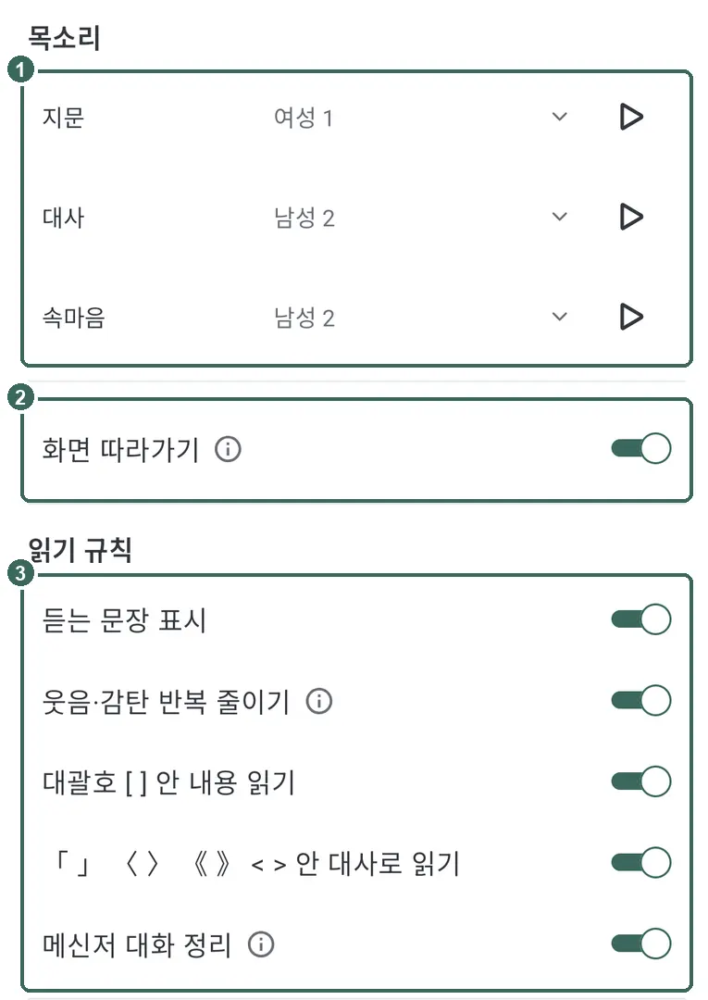
'화면 따라가기'를 켜면 읽는 문장을 따라 쪽이 넘어가고, 끄면 듣는 중에도 다른 쪽을 자유롭게 봅니다. 앱을 벗어나거나 화면이 꺼져도 계속 읽고, 읽기 화면을 나가면 멈춥니다. 다음에 '듣기'를 다시 누르면 '이어 듣기'로 듣던 문장부터 듣습니다.
감상 쓰기
감상 첫머리에 10화·20권·p. 30을 적고 공백이나 줄바꿈을 넣습니다. !10·@20·p30으로도 적습니다.
여러 화는 10-12화 또는 !10-12로 적습니다. 표시 뒤에 공백이나 줄바꿈을 넣고 감상을 이어 씁니다.
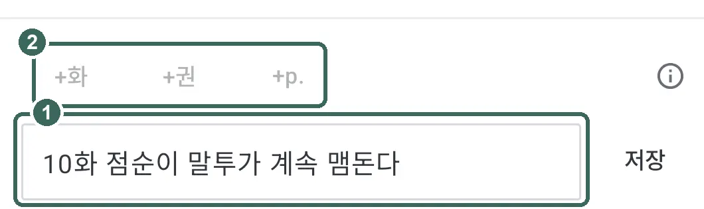
회차 표시 없이 적으면 총감상으로 남습니다. 작품 전체에 대한 한마디는 맨 위 '전체평'에서 씁니다.
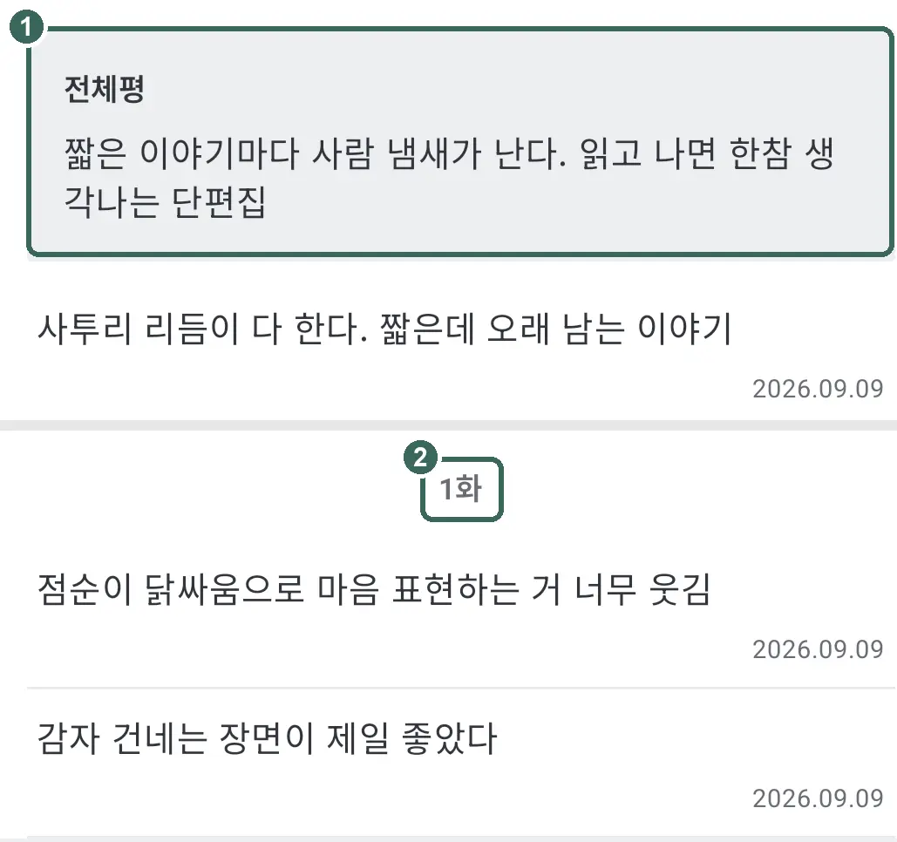
서재 정리·책장
서재의 '책장 목록'에서 '+ 새 책장 추가'로 책장을 만듭니다. 작품을 길게 눌러 '책장에 추가'를 고릅니다.
'작품 정보 변경'에서 상태를 바꾸면 책 파일이 있는 작품은 상태별 책장에 모입니다(여러 작품은 선택한 뒤 '독서 상태 변경'). '읽는 중'에는 '연재 중'·'재독', '완독'에는 '연재 완독'도 모입니다. 상태별 책장에는 작품을 직접 넣거나 뺄 수 없습니다.
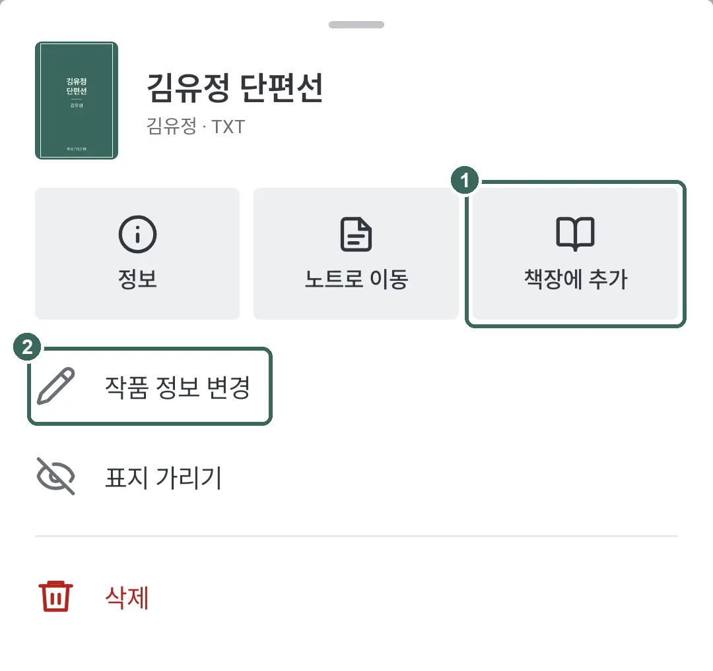
처음에는 '시작 전'·'하차'·'기록만' 책장이 숨겨져 있습니다. '책장 목록'의 '편집'에서 표시할 책장을 고릅니다.
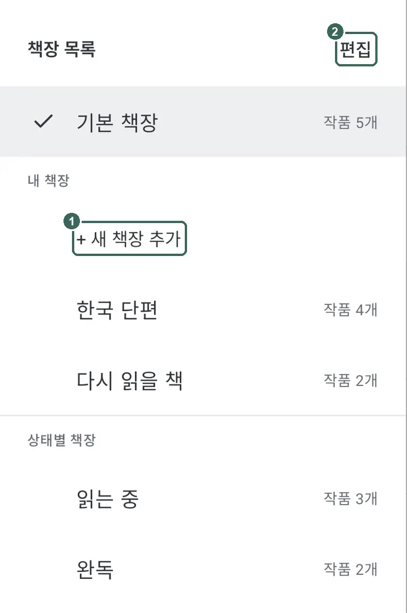
'기록만'에는 책 파일 없는 작품이 모입니다. '책장에서 빼기'를 해도 작품과 기록은 남습니다.
달력·통계
뷰어의 첫 화면이 뜬 뒤 10초 넘게 읽거나 감상을 저장하면 읽은 날이 기록됩니다. 작품 정보에서 '이 작품 자동 기록 끄기'를 켠 작품은 읽거나 감상을 저장해도 읽은 날이 자동으로 기록되지 않습니다. '달력'에서 날짜를 누르고 '작품 추가'로 읽은 날을 직접 추가할 수 있습니다.
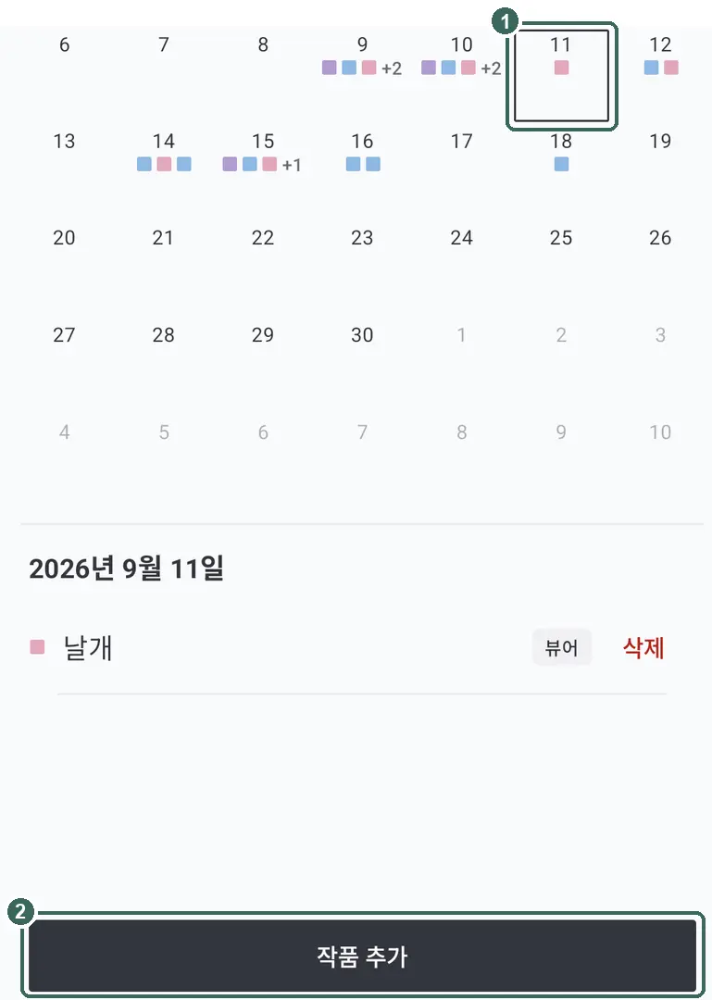
'연간'에서는 한 해의 읽은 날을 봅니다. '연속 읽은 날'에서는 현재와 최장 기록을 봅니다.
'통계'의 '이달 요약'에서 '읽은 작품'과 '감상 수'는 감상 기록 기준입니다. '독서일'은 읽은 날의 수입니다.
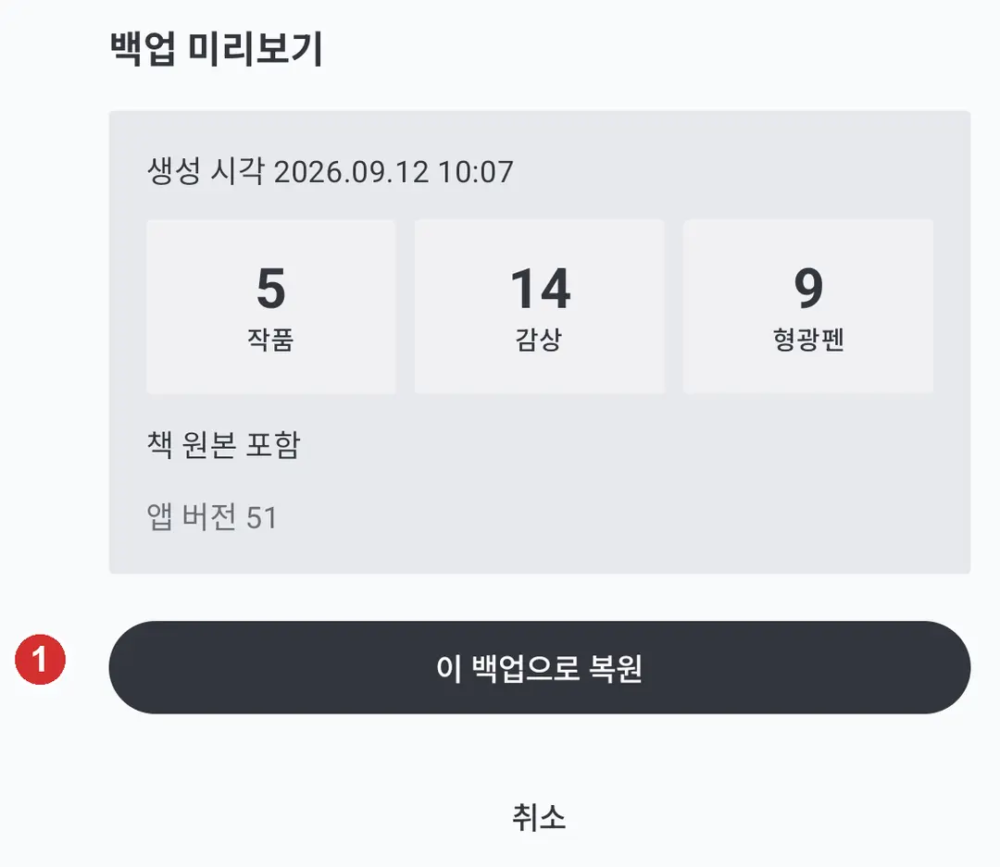
'달력'의 작품 색은 기본으로 작품의 유형 색을 따릅니다. 날짜를 누른 뒤 작품 행 앞의 색 점을 눌러 작품별 색을 고릅니다. 화면 위 ⋮ 메뉴에서 '작품 색 표시'를 끄면 모두 같은 색으로 표시합니다.
백업
My의 '백업'에서 '백업 파일 만들기'로 기록과 설정을 저장합니다. 암호는 8자 이상으로 정하며, 잊으면 백업을 복구하지 못합니다.
‘책 원본 파일 포함’을 끄고 백업하면 파일 크기가 줄지만, 복원할 때 기기에 없는 책은 파일을 다시 등록하거나 드롭박스에서 받아야 합니다.
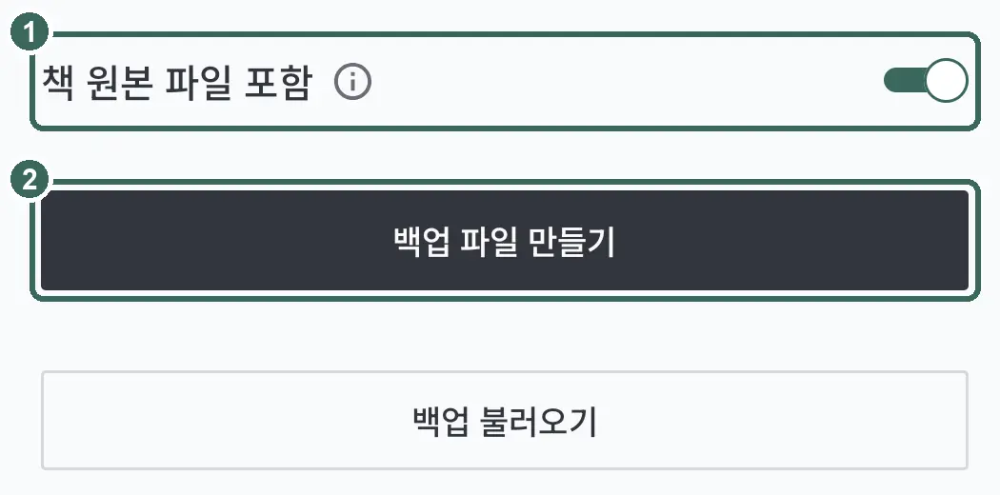
'백업 불러오기'에서 파일을 확인하고 '이 백업으로 복원'을 누릅니다. 현재 기록과 설정이 백업 내용으로 바뀝니다.
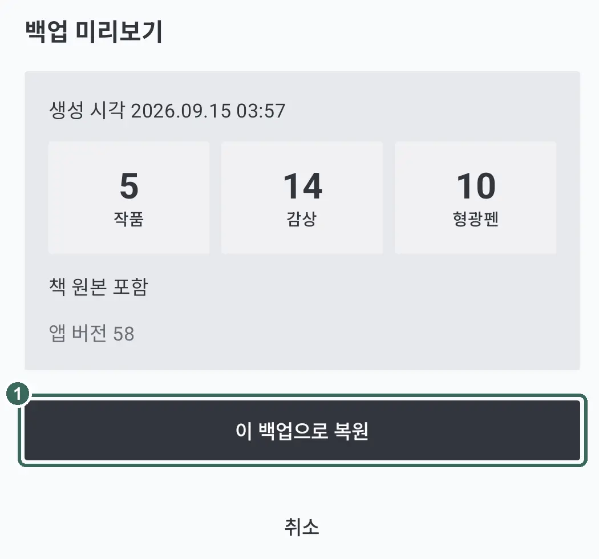
이잉크 기기에서
전자잉크 화면에서는 My의 '앱 전체 고대비 (이잉크)'를 켭니다. 밝은 테마에서만 글자와 선의 대비를 높입니다.
읽기 화면의 '뷰어 설정'에서 '이잉크 모드'를 따로 켭니다. 흰 배경과 검은 글자로 바뀌며 화면 움직임과 페이지 전환 효과를 줄입니다.
잔상이 남으면 '주기적 전체 새로 고침'을 켜고 '전체 새로 고침 주기'를 정합니다. 정한 쪽수마다 화면 전체를 다시 그립니다.
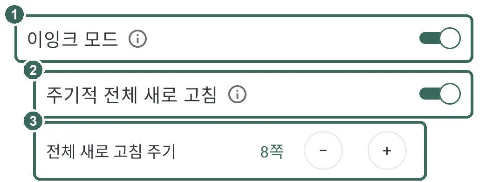
드롭박스
My의 ‘드롭박스 동기화’에서 ‘드롭박스 연결’을 누릅니다. 각 기기에 같은 책 파일이 있으면 읽던 위치·책갈피·형광펜과 메모를 책을 열고 닫을 때 자동으로 동기화합니다. 다만 TXT 책에 ‘다른 기기 앱 업데이트 대기 중’이 표시되면 다른 기기의 앱도 업데이트한 뒤 ‘동기화 시작’을 누릅니다.
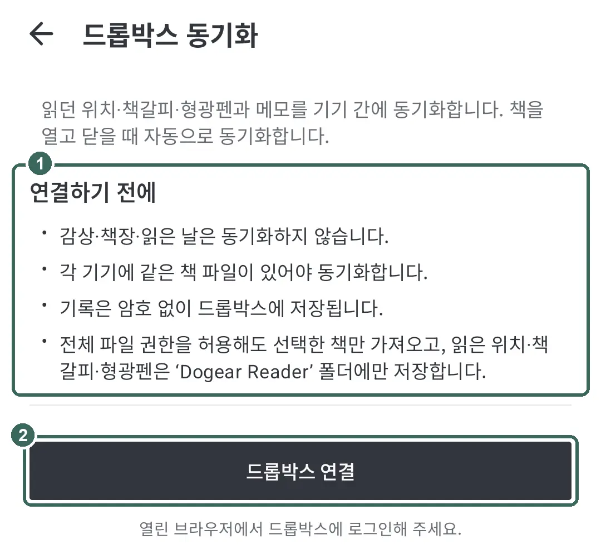
서재 화면 위 ‘드롭박스’ 탭을 누릅니다. ☰로 폴더 목록을 열고 책이 있는 폴더를 고릅니다.
책을 누르면 파일을 받아 서재에 추가하고 엽니다.
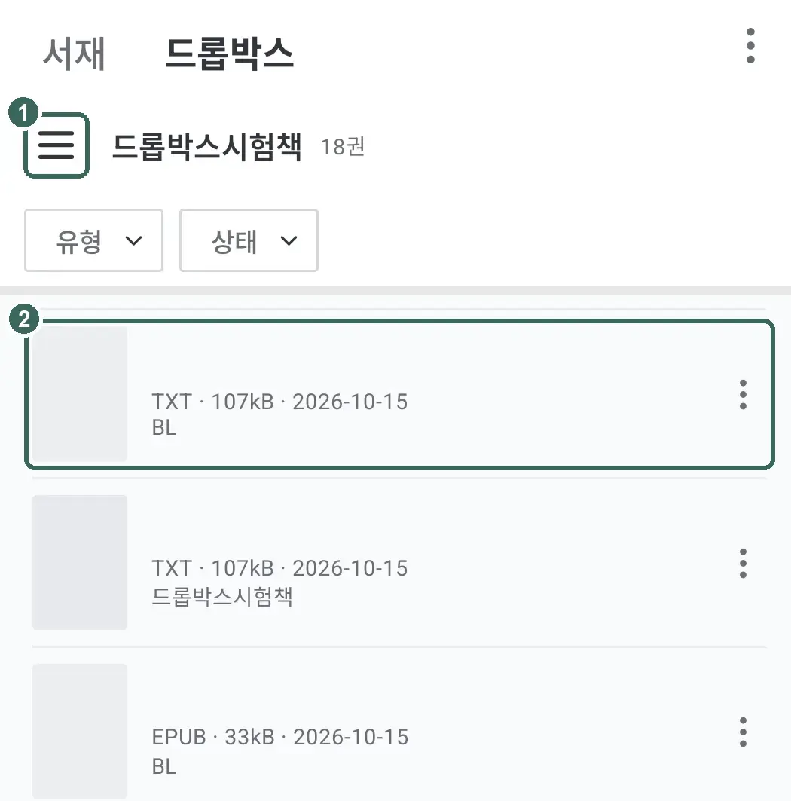
여러 권은 화면 위 ⋮의 ‘이 폴더의 책 추가’에서 고릅니다. ‘추가’를 누른 뒤 확인 창에서 ‘받기’를 누릅니다.
책을 열 때 ‘이 기기에 책 파일이 없습니다.’가 나오면 ‘드롭박스에서 받기’를 누릅니다. 이 버튼은 드롭박스가 연결되어 있고 같은 책 파일을 다시 받을 수 있을 때 표시됩니다.